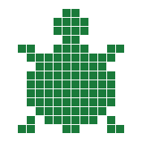

There is a turtle on your screen.
You tell it what to do.
It listens and draws!
The Turtle Book is a 20-chapter tutorial that teaches geometry through Logo programming. Start with simple lines, build up to squares and stars, learn the shape rule, create colorful patterns, and design your own turtle sprites.
Written for young learners who are ready to type.
All you need is a computer and curiosity.
